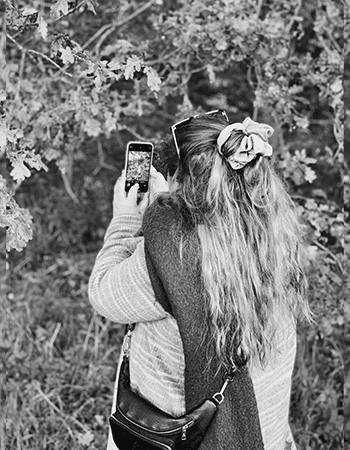

OM MIG
Mit fulde navn er Gro Emilie Jespersen-Leth, jeg er 26 år gammel og uddannet multimediedesigner. Jeg har passion for kodning og jeg har en drøm om at blive en af danmarks bedste koder. Før jeg startede på multimediedesigner uddannelsen gik jeg på læreruddannelsen hvor jeg stoppet halvvejs på uddannelsen, da jeg opdagede at jeg havde en passion for at kode. På læreruddannelsen kan man vælge valgfag og her valgte jeg et valgfag som blev kaldt programmering det var der jeg for første gang prøvet at kode. Det vækket en passion som nu har ført mig til hvor jeg er i dag. Min tid på læreruddannelsen gør at jeg har nogle særlige kompetencer til at lære fra mig. Hvilket jeg på multimediedesigner uddannelsen har kunne anvende, ikke bare til at hjælpe andre med at kode men til selv at blive en meget stærkere koder.
I've learned that I still have a lot to learn
- Maya Angelou
Jeg er opvokset i Odense hvor jeg også er bosat i dag. Når jeg ikke er til at finde foran én computerskærm så er jeg til at finde på enten tennisbanen eller håndboldbanen hvor jeg får trænet mine samarbejdsevner. I min hverdag søger jeg inspiration og ro i naturen, derfor nyder jeg en god lang gå tur ude i skoven med min mand eller ved vandet, hvor jeg ikke er bleg for at tage en dukkert selv i rigtig koldt vand. Min mand og jeg blev gift i sommeren 2021, vi har kendt hinanden siden vi var teenager hvor vi tog HF sammen.
Sammen med min tidligere medstuderende og bedste veninde gennem mange år har jeg skabt én virksomhed, som hedder PrettyPen. Sammen får vi dyrket vores kreativitet ved at skabe illustrative plakater. I kan se hvad vi har skabt ved at klikke på Instagram logoet. Det har været en drøm i mange år for os begge to at skabe noget sammen hvor vi kunne bruge vores kreativitet.
Når man arbejder sammen med mig får man en holdkammerat som er passioneret for kodning, som tager sit arbejde meget seriøst og som altid er klar på at lære nye ting. Jeg er lærernem og omstillingsparat. Som person er jeg udadvendt, smilende og har et smittende humør. Jeg håber at ovenstående har vakt jeres interesse og at I vil kontakte mig. I finder alle kontakt oplysninger på min kontakt side.
